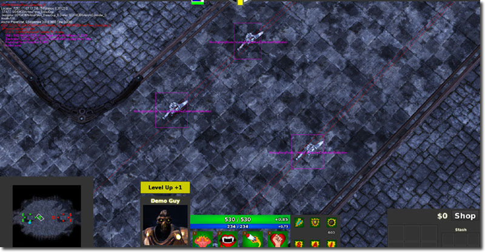
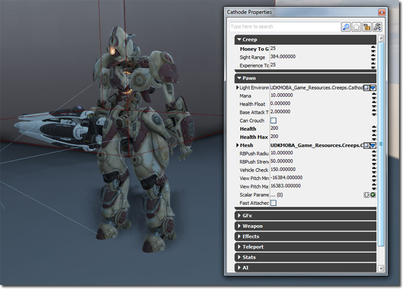
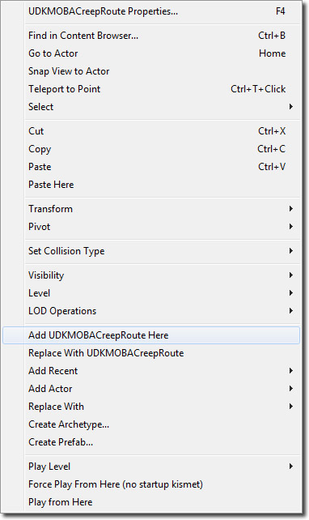
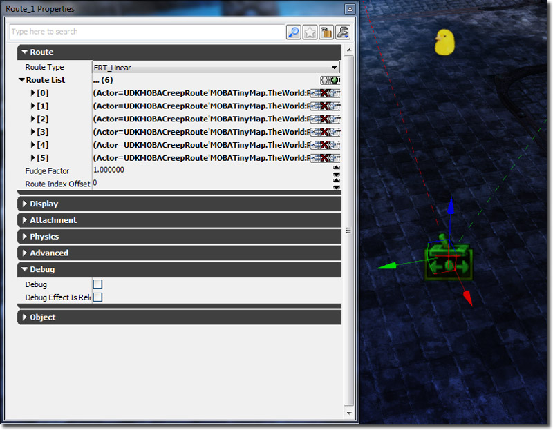
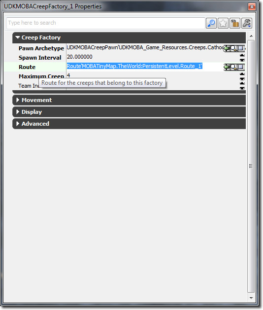

UDN
Search public documentation:
MOBAKitCreepsKR
English Translation
日本語訳
中国翻译
Interested in the Unreal Engine?
Visit the Unreal Technology site.
Looking for jobs and company info?
Check out the Epic games site.
Questions about support via UDN?
Contact the UDN Staff
日本語訳
中国翻译
Interested in the Unreal Engine?
Visit the Unreal Technology site.
Looking for jobs and company info?
Check out the Epic games site.
Questions about support via UDN?
Contact the UDN Staff
MOBA 스타터 키트 - 크립
문서 변경내역: James Tan 작성. 홍성진 번역. UDK 2012-05 버전으로 최종 테스팅
개요
크립이란 맵을 돌아다니다가 근처의 적, 영웅, 건물을 타겟으로 잡고 공격하는 단순한 AI 를 지닌 NPC (플레이어가 조종하지 않는 캐릭터)를 말합니다. 관련 클래스들은:
- UDKMOBACreepAIController - 크립 폰의 인공지능 전부를 처리하는 클래스입니다.
- UDKMOBACreepFactory - 크립의 스폰 처리와 맵에서 이 팩토리가 스폰시킨 크립의 수를 감시하는 클래스입니다.
- UDKMOBACreepPawn - 크립의 물리적 표현인 폰 클래스입니다.
- UDKMOBACreepRoute - 크립이 따라갈 경로의 일부를 나타내는 데 사용되는 클래스입니다.
디버깅

일정한 시간에 크립이 무엇을 하고 있는지 추가적인 정보가 필요한 경우, ~ 키를 눌러 콘솔을 연 다음 showdebug aicreep 을 입력하여 디버그 모드를 켜면 됩니다. 그러면 크립이 이동하고자 하는 곳을 나타내는 선, 어떤 스테이트 및 스테이트 블록에 있는지를 나타내는 텍스트가 그려집니다. showdebug boundingboxes 를 사용하여 크립에 맞게 생성된 바운딩 박스를 디버깅할 수도 있습니다. 바운딩 박스를 나타내는 보라색 상자가 그려집니다.UDKMOBACreepAIController
UDKMOBACreepAIController 는 어떤 순간에 크립이 무엇을 할 것인가를 제어하는 "뇌" 역할을 합니다. AI Controller 는 단순히 일정한 틱마다 어떤 함수를 실행하여 무엇을 할 것인지 결정합니다. 주변에서 발생한 이벤트에 반응할 수 있도록 이벤트를 받기도 합니다.
크립 스폰하기
크립은 레벨에 놓인 UDKMOBACreepFactory::SpawnCreepTimer() 에서만 스폰됩니다. UDKMOBACreepFactory::SpawnCreepTimer() 가 폰을 스폰시킬 때, 크립 폰은 자동으로 UDKMOBAAIController 를 스폰시키는데, 거기에는 UDKMOBAPawn::PostBeginPlay() 에서 호출되는 Pawn::SpawnDefaultController() 를 사용합니다. UDKMOBAAIController 가 스폰될 때, 크립 폰을 자동으로 빙의(possess)하여 제어합니다. 거기서 UDKMOBACreepFactory::SpawnCreepTimer() 는 그 이후 UDKMOBACreepAIController::Initialize() 를 호출합니다. 이 함수는 흔히 사용되는 변수를 캐시하고, AI 루프를 구성하여, 이벤트 처리를 돕는 Actor 를 초기화하는 등, AI Controller 를 구성합니다.WhatToDoNext()
UDKMOBAAIController::WhatToDoNext() 는 메인 AI 루프 함수입니다. 현재 크립 폰이 살아있는 한 0.25f 초마다 실행되도록 구성되어 있습니다. 크립은 미리 정의된 크립 경로를 따라 움직이거나, 적 크립이나 영웅이나 타워를 공격하거나, 두 가지 모드밖에 없으니 메인 AI 루프는 꽤나 단순합니다. 먼저 크립은 현재 적 레퍼런스가 유효한지 확인합니다. 유효하지 않으면 저 레페런스를 지웁니다. 적 레퍼런스가 유효하지 않으면 (None 이면) 크립은 보이는 공격 인터페이스(VisibleAttackInterfaces) 배열 내 다른 공격할 것이 없나 기본 검색을 합니다. 다른 유효 공격 대상이 있으면, 크립 AI Controller 는 AttackingCurrentEnemy 스테이트(상태)에 들어갑니다. 그 외에 유효한 공격 대상이 없는 경우, 크립 AI Controller 는 MovingAlongRoute 스테이트에 들어갑니다.VisibleAttackInterfaces 배열
VisibleAttackInterfaces 배열은 UDKMOBAAttackInterface 를 구현하는 액터 중 크립이 '볼' 수 있는 모든 액터의 배열입니다. 크립 시야는 트리거를 사용하여 업데이트됩니다. 이 작업은 틱마다 foreach 반복처리기를 통해 돌리는데, 모바일 디바이스에서 더 나은 효율을 보였기 때문입니다. 트리거는 단순히 크립 폰에 붙이는 식으로 작동합니다. 액터가 (실린더 콜리전 컴포넌트가 있는) 트리거에 닿으면, InternalOnSightTriggerTouch() 가 호출됩니다. 이 함수는 범주에 맞는 Actor 면 VisibleAttackInterfaces 배열에 추가시킵니다. 액터가 트리거에서 떨어지면, InternalOnSightTriggerUnTouch 가 호출됩니다. 이러한 이벤트 기반 방식으로 크립의 시야를 흉내냅니다.MovingAlongRoute 스테이트
이 스테이트에서 크립은 단순히 자신을 스폰시킨 UDKMOBACreepFactory 를 통해 주어진 미리지정 경로를 따라갑니다. 이 작업은 SetDestinationPosition() 와 SetFocalPoint() 를 통해 이루어집니다. 이 함수는 MoveTo(), MoveToward(), 기타 변종에 대해 사용되는데, 그게 좀 더 안정적인 동작을 보였기 때문입니다. 네이티브 코드에서 목적지 위치를 설정하면 폰이 그 위치를 향해 이동할 수 있도록 AIController 가 폰의 속도와 가속도를 조정합니다. 크립은 미리정의된 방식으로 움직일 것이기에, 이런 식으로 하는 것이 훨씬 쉬웠습니다. 폰이 목적지 위치에 도달하면 ReachedPreciseDestination() 가 호출됩니다. 그러면 스테이트는 HasReachedDestination 블록으로 점프합니다. 목적지 위치의 Z 를 매 Tick() 마다 조절하는 이유는, 평평하지 않은 지형에 잘 적응하기 위해서입니다. 목적지 위치에 도달한 폰의 경우, 폰의 Z 위치 역시 목적지 위치의 오차 범위 내에 있어야 했습니다. 왜냐면 MOBA 는 엄밀히 말해서 2D (내려보기형) 게임이므로, 이동 좌표에 항상 Z 정보가 전달되지는 않았고, 그때문에 예전에는 폰이 멈추는 현상이 나타났었습니다.Begin 블록
이 블록은 크립이 유효한지, 올바른 물리 상태에 있는지 확인합니다. 그렇지 않다면 이번 틱에는 단순히 실행을 중지시키고, 다음 틱에 다시 확인합니다. CreepPawn 이 없다면, End 블록으로 내려갑니다.MoveDirect 블록
이 블록은 크립이 목적지 위치로 이동할 수 있다면 bPreciseDestination 를 참으로 설정하여 바로 이동하도록 합니다. 이런 불리언 설정 방식은 콘트롤러가 폰의 속도와 가속도를 자동으로 조절하도록 하는 것이 가능합니다.WaitingForReachedDestinationNotification 블록
이 블록에는 단순히 크립 루핑이 들어있습니다. Sleep() 은 무한 루프 방지를 위해 사용됩니다. 이 블록은 언젠가는, ReachedPreciseDestination() 가 호출되면 exit 됩니다.HasReachedDestination 블록
이 블록은 경로상 다음 지점으로의 이동을 처리합니다. 이 작업은 UDKMOBACreepFactory 에 레퍼런스된 Route Actor 내 경로 목록 상의 다음 액터를 구해오는 식으로 이루어집니다.End 블록
AttackingCurrentEnemy 스테이트
UDKMOBAAIController 에 정의되어 있는 스테이트입니다. 자세한 정보는 [[]] 페이지를 참고해 주시기 바랍니다.UDKMOBACreepFactory
Creep Factory 는 크립의 스폰, 크립 인구 관리, 크립에게 기타 정보 제공 등을 담당하는, 에디터에서 놓을 수 있는 클래스입니다.
함수
- PostBeginPlay() - 월드에서 크립 팩토리가 초기화될 때 호출됩니다.
- CreepDied() - 이 팩토리에서 스폰된 크립이 죽을 때 호출됩니다. MaximumCreepCount 를 관리하는 데 사용됩니다.
- SpawnCreepTimer() - 간격이 SpawnInterval 로 설정된 타이머마다 호출됩니다. 크립의 스폰을 담당합니다.
변수
- PawnArchetype 폰 아키타입 - 스폰시킬 UDKMOBACreepPawn 아키타입 입니다.
- SpawnInterval 스폰 간격 - 크립을 스폰할 때마다의 초 단위 간격입니다. 크립 스폰 속도로 생각해도 되겠습니다.
- Route 경로 - 이 팩토리에서 스폰된 모든 크립이 따를 경로에 대한 레퍼런스입니다. 크립 경로를 새로 만드는 법은 아래를 참고하세요.
- MaximumCreepCount 최대 크립 수 - 게임 내 일정 시점에서 이 팩토리에서 스폰시킬 수 있는 최대 크립 수입니다. 퍼포먼스상의 이유로 레벨 디자이너가 인구 수를 제어하는 데 도움이 됩니다.
- TeamIndex 팀 인덱스 - 이 팩토리에서 스폰된 모든 크립이 속하는 팀의 인덱스입니다.
UDKMOBACreepPawn
게임 월드 안에서 크립의 물리적 표현 클래스입니다.
함수
- PostBeginPlay() - 폰을 초기화시켜야 할 때 네이티브 코드가 호출하는 함수입니다. 오클루전 컬러를 설정하고 크립에 디폴트 인벤토리를 추가해 줍니다. 크립 인스턴스가 클라이언트나 독립형 게임에 존재하면 (즉 데디케이티드 서버에서는 제외) 오클루전 컬러만 설정합니다.
- Died() - 크립이 죽을 때 호출되는 함수입니다. 적 영웅이 폰을 죽였으면, 근처 영웅들에게 경험치를 줍니다. 주어지는 경험치 양은 근처의 영웅들에게 나눠집니다. 크립을 죽인 영웅이 같은 팀이면 그 영웅에게 거부 점수를 주고, 다른 팀이면 돈을 줍니다. 그 후 관련 클래스들에 크립이 죽었음을 알려 주고, 또 레퍼런스가 있으면 지우기도 하여 크립을 정리합니다. 플랫폼이 PC 라면 크립은 래그돌로 만들어 나중에 자동으로 소멸되도록 하고, 그 외 플랫폼이라면 그냥 소멸시킵니다.
- GetTeamNum() - 크립이 속하는 팀을 반환합니다. 크립 팩토리가 존재한다면 그 팀 인덱스를 사용하고, 존재하지 않으면 그냥 상위 클래스(super)를 호출합니다.
- BotFire() - 크립이 무기를 발사하도록 만드는 함수입니다.
- GetMinimapLayer() - 크립 미니맵 아이콘이 있어야 하는 레이어 EML_Creeps 를 반환하는 함수입니다.
- UpdateMinimapIcon() - 주어진 미니맵 아이콘을 업데이트시키는 함수입니다. 단순히 GFx 무비 클립이 올바른 프레임에 있는지를 확인합니다.
- IsValidToAttack() - 크립을 공격할 수 있으면 참을 반환합니다.
- GetTouchPriority() - 크립의 터치 우선권을 반환합니다. 터치 우선권이란 플레이어가 마우스로든 터치패드로든 선택을 할 때 가장 중요한 액터를 선택할 수 있도록 하는 데 사용됩니다.
변수
- MoneyToGiveOnKill 죽일 때 주는 돈 - 이 크립을 죽일 때 줄 돈의 양입니다.
- SightRange 시야 범위 - 이 크립의 시야 범위입니다. AI 의 가시성 범위 검사에 사용됩니다.
- ExperienceToGiveOnKill 죽일 때 주는 경험치 - 이 크립을 죽일 때 줄 경험치의 양입니다.
크립 아키타입 새로 만들기
크립 아키타입을 새로 만들려면, 콘텐츠 브라우저를 열고 액터 클래스 탭으로 갑니다. 검색창에 "Creep" 이라고 쳐 다른 것들은 걸러냅니다. UDKMOBACreepPawn 에 우클릭한 다음 맥락 메뉴에서 "아키타입 생성(Create Archetype...)" 을 선택합니다. 텍스트 필드에 아키타입을 저장하고자 하는 곳을 채워넣은 다음 OK 를 누릅니다. 크립 아키타입의 가장 쉬운 셋업 방법은, 콘텐츠 브라우저의 아키타입을 끌어다가 월드 어딘가에 놓는 것입니다. 콘텐츠 브라우저의 아키타입에 더블 클릭하여 아키타입의 프로퍼티 창을 엽니다. 아키타입의 프로퍼티 창에 프로퍼티를 설정하면 월드에 있는 인스턴스에 전파되니, 만족할 때까지 조정해 주면 됩니다.
크립 아키타입의 가장 쉬운 셋업 방법은, 콘텐츠 브라우저의 아키타입을 끌어다가 월드 어딘가에 놓는 것입니다. 콘텐츠 브라우저의 아키타입에 더블 클릭하여 아키타입의 프로퍼티 창을 엽니다. 아키타입의 프로퍼티 창에 프로퍼티를 설정하면 월드에 있는 인스턴스에 전파되니, 만족할 때까지 조정해 주면 됩니다.

UDKMOBACreepRoute
크립이 적 크립, 영웅, (타워같은) 건물을 공격하지 않을 때 따라가야 할 경로의 일부를 나타내는 에디터 배치가능 클래스입니다. 이 액터가 NavigationPoint 같은 것을 확장(extend)하지 않은 이유는, 이 점들은 맵의 내비게이션 데이터에 영향을 끼칠 일이 없기 때문입니다.
UDKMOBACreepRoute 를 사용하여 새로운 크립 경로 만드는 법
크립의 경로를 새로 만들려면 먼저 콘텐츠 브라우저를 열고 액터 클래스 탭을 선택합니다. UDKMOBACreepRoute 액터를 찾을 때까지 트리를 펼친 후 선택합니다. 월드 뷰포트에서 UDKMOBACreepRoute 를 새로 추가하려는 지점에 우클릭하여 나타나는 맥락 메뉴에서 "Add UDKMOBACreepRoute Here" 를 선택합니다. 그러면 언리얼 에디터가 새로운 UDKMOBACreepRoute 를 놓습니다.
월드 뷰포트에서 UDKMOBACreepRoute 를 새로 추가하려는 지점에 우클릭하여 나타나는 맥락 메뉴에서 "Add UDKMOBACreepRoute Here" 를 선택합니다. 그러면 언리얼 에디터가 새로운 UDKMOBACreepRoute 를 놓습니다.

경로 지점 배치를 완료한 이후에는 Route 액터를 만들어 실제 경로를 정의해야 합니다. 그러기 위해서는 콘텐츠 브라우저의 액터 클래스 탭으로 되돌아가 Route 액터를 찾습니다. Route 액터를 월드 아무데나 놓습니다 (Route 의 위치 자체는 게임에 어떠한 영향도 주지 않습니다). Route 액터에 더블클릭하거나 선택한 후 F4 키를 눌러 Route 의 프로퍼티 창을 엽니다.
Route List 배열을 펼치고 맵에 놓은 UDKMOBACreepRoute 액터 각각을 추가합니다. Route 액터를 다시 선택하면 에디터 뷰포트에 렌더링되는 동선을 업데이트할 수 있습니다. 마치고나면 에디터 뷰포트에 다음과 같은 Route 를 확인할 수 있습니다. 마지막으로 UDKMOBACreepFactory 로의 경로를 이어줘야 합니다. 이로써 UDKMOBACreepFactory 가 자신의 모든 크립더러 이 길을 따르라 할 수 있는 것입니다.
마지막으로 UDKMOBACreepFactory 로의 경로를 이어줘야 합니다. 이로써 UDKMOBACreepFactory 가 자신의 모든 크립더러 이 길을 따르라 할 수 있는 것입니다.
